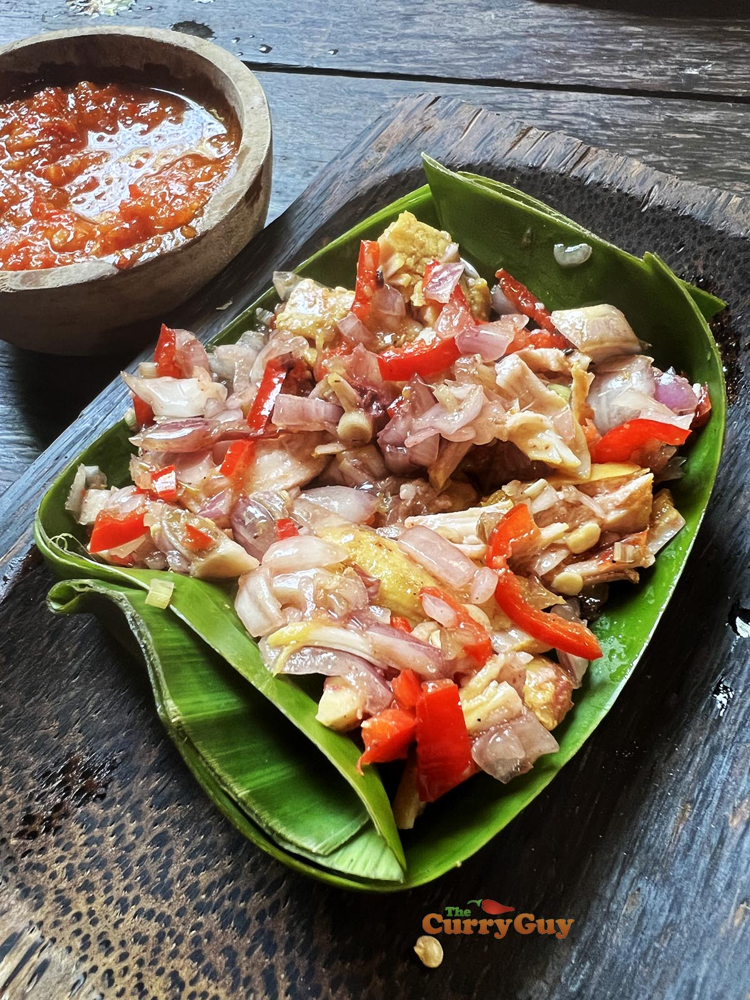

Sambal-Matah
Ingredients

- 2 x Lemongrass Stalks
- 8 x Shallots
- 3 x Cloves of Garlic
- 3 x Fresh Kaffir Lime Leaves
- 6 x Thai Chilli (finely chopped)
- 1/2 tsp of Terasi
- 2 Tbsp of Kaffir Lime juice
- 3 Tbsp of Coconut oil
Instructions
- Peel off outer layer of lemongrass, only using tender parts of the
lemongrass. Finely chop the shallots, cloves of garlics and finely chop the thai chillies
aswell. Lastly, use scissors to cut the kaffir lime leaves into little pieces, discarding the
leaf stalks into the bin, meanwhile all of the chopped ingredients chuck it all into a bowl!
- Combine them with terasi/shrimp paste and the ingredients for seasonings
- Preheat 3 Tbsp of coconut oil over medium heat until it's hot, then pour the hot oil
into the mixture at step 1 and then stir the mixtture and add salt and sugar to taste.
- All done! if you're done with it, feel free to stir the leftovers into the fridge for up to one week